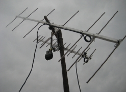

Regülatörleri çoğumuz hatırlarız. Televizyonlarımızın en büyük yardımcısı, voltajın gücünü ayarlayan kırmızı ışıklı bir alet. Düğmesi yandığı vakit televizyonlar seyredilmeye hazır hale gelirdi. O zamanlar regülatörü olmayan ev yoktu. Sanki o olmazsa televizyon seyredilemezmiş gibi gelirdi.
Düğmesini oturduğunuz yerden ayağınızla açmak modaydı. Üzerinde bir adet dantel mutlaka bulunur, dantelin duruşu yanlışlıkla yamulursa, anneden fırça yenirdi.
Çatılardan sesler gelirdi: “Çekiyor mu, böyle iyi mi? Aşağıda pencereden uzanan kafalardan cevap gelirdi: “Karlı, karıncalı, böyle kalsın,” gibi. Evet, Antenlerden bahsediyorum.
Antenler alimunyumdan yapılma olurdu. Üzerinde bir sürü tel, kabloları uzun olmalıydı ki eve kadar uzansın. Siz aldığınız daha büyük ve yeni bir antene yer bulmaya çalışırken, komşunuzunkini engelleyebilirdiniz.

Çatılar antenlerden geçilmezdi. Yüksek katlı binalardan bir tarla gibi görünürdü yamuk yumuk duran antenler. İyi çeksin diye tencere kapakları takarlardı bir yerlerine. Komikti, ama inanılırdı daha iyi çektiğine. Seksenlerin sonuna doğru bu düz telli antenlerin yerini çanak antenler almaya başlamıştı.
Bir arada televizyon önüne renkleri genelde mavi olan cam koruyucular takılmaya başlanmıştı. Sonra da dedikodular. O korumak için takılan aparatların televizyonu renkli gösterdiğine inanılıyordu. Hâlbuki nihayetinde sadece önündeki malzemenin rengi aksediyordu, Beyaz Cam denilen televizyonlara.
Uzaktan kumanda ellerde yerini bulmadan önce evin çocukları bu vazifeyi görürdü. Televizyonumuz tek kanallıydı. Adı da sadece TRT idi. İkinci kanalın açılmasından sonra TRT 1 ve TRT 2 diye isimleri olmuştu. Hayret etmiştik nasıl olabiliyordu böyle bir şey diyerek. Aklımıza hiç radyonun düzeneği ve ayrı kanalları da gelmiyordu.
Televizyonun arkalarında kocaman bir tüp bulunurdu. Bir şey olur da televizyon düşerse bu tüp patlar diye korkuturlardı bizi. Bir keresinde kardeşimle biraz fazla sertçe bir oyun oynarken, Philips marka televizyonumuzu tepesi üstüne düşürmüştük. Annem oradan hemen çekilmemiz için uyarıyordu bizi. Patlayacak diye düşünürken, üzerinden bir toz bulutu yükseliyordu. Meğerse yılların biriktirdiği tozlarmış havaya yükselen.
Televizyon örtü ve dantelleri: Hemen her televizyon ya da radyonun üstünde bulunurdu bu danteller. Anneler özenle ördükleri bu şeyleri bunların üstüne örtmeye bayılırdı. Bir bakıma verilen değeri ya da bu nesnelerin kıymetini de anlatır. Önceleri yayın saatlerinin kesintili olması da etkiliydi, diye düşünüyordum, ama bu geleneği bazılarının halen devam ettirdiklerini bildiğimden vaz geçerim.